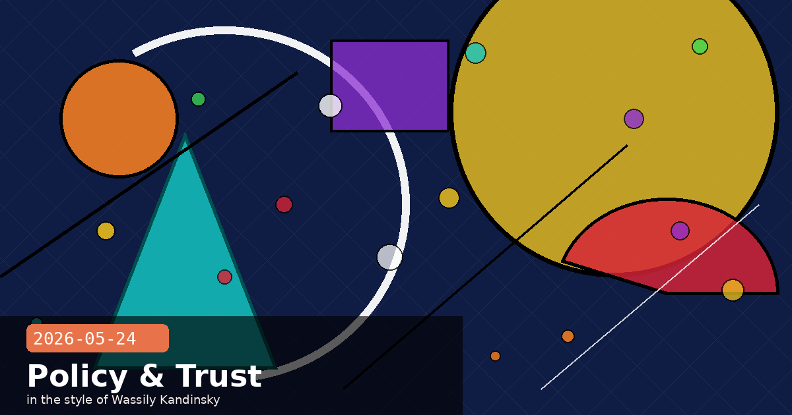

RSP v2.1, Claude Code Workspace Snapshots & Shared Spaces for Teams

🧭 Anthropic Publishes RSP v2.1 — Stricter ASL-3 Evaluations and First-Ever Public Red-Team Summary
One day after announcing its cross-faith AI ethics dialogue, Anthropic has released a substantially revised Responsible Scaling Policy (RSP v2.1). The update formalises tighter capability evaluations for frontier models at ASL-3, introduces a new class of "containment commitments" that limit how broadly a model can be deployed before reaching specific safety benchmarks, and — most notably — publishes the first-ever public summary of Anthropic's internal red-team findings: the categories of misuse most reliably elicited in testing, which defences worked, and which did not.
What changed from RSP v2.0
Expanded ASL-3 evaluation suite — the set of capability benchmarks that trigger ASL-3 classification has been widened to include novel biosecurity uplift tests co-developed with the Johns Hopkins Center for Health Security, and a new "social engineering at scale" benchmark measuring whether a model can autonomously influence large populations through coordinated messaging
Containment commitments — new clause: a model that reaches ASL-3 capability thresholds cannot be deployed beyond a controlled operator programme until it also passes a corresponding set of "safety sufficiency" evaluations. Previously, safety evaluations and capability evaluations ran in parallel; they are now explicitly gated
Stop-training threshold — Anthropic commits publicly, for the first time, to halting a training run if any in-training checkpoint exceeds a new internal uplift benchmark by a margin Anthropic deems "unacceptable" — the benchmark itself remains classified, but the commitment is now a documented policy rather than an informal norm
Third-party audit schedule — RSP v2.1 adds a requirement for external audits of ASL-3 and above evaluations, with METR (formerly ARC Evals) and UK AISI named as initial audit partners
The public red-team summary: what it says
The most technically substantive addition is a 12-page red-team summary appended to the policy. Key disclosures include:
Most reliably elicited misuse category: "persuasive content at scale" (creating targeted political messaging, disinformation templates, and influence-campaign assets) — this succeeded in red-team scenarios far more often than weapons uplift or CBRN assistance
Defences that worked: output classifiers tuned on adversarial red-team outputs significantly reduced success rates in follow-up testing; rule-based refusals alone did not
Defences that did not work: role-play framing and indirect jailbreaks via tool calls remained difficult to block without unacceptable false-positive rates on legitimate uses
Why this matters for operators building on the API
The red-team summary is not just academic transparency — it directly informs what kinds of use cases Anthropic will consider high-risk, and therefore which operator applications may face tighter scrutiny or usage policy enforcement. If your product involves generating persuasive content at scale (marketing copy generation, A/B testing content, political outreach tools), review your operator agreement against this disclosure. The containment commitments also signal that future frontier model rollouts may arrive to the API more slowly while safety evaluations complete.
🧭 Claude Code v2.1.149: Workspace Snapshots — Save and Resume Multi-Agent Sessions Across Machines
Three days after the exit-code regression hotfix (v2.1.148), Anthropic has shipped Claude Code v2.1.149 with a significant new capability for long-running agentic workflows: Workspace Snapshots. A snapshot captures the full serialised state of an active session — open file edits, task queue, sub-agent identifiers, permission grants, and the in-memory conversation context — and saves it as a JSON file in .claude/snapshots/ inside the project directory. Snapshots can be restored on any machine with access to the same project directory, enabling handoff between laptops, CI runners, and remote VMs without losing agent state.
Using snapshots
# Save current session to a named snapshot
/snapshot save "before-api-refactor"
# List snapshots for this project
/snapshot list
# Resume the most recent snapshot (within same session or new session)
claude --resume latest
# Resume a named snapshot
claude --resume "before-api-refactor"
# Delete snapshots older than 7 days
/snapshot prune --older-than 7d
What is and isn't captured
Captured: task queue, sub-agent status (running/waiting/done), all pending file edits (as diffs, not full files), explicit permission grants for the session, conversation history up to the compaction limit
Not captured: external process state (shell commands that were running), network connections held by tools, secret/environment variables (must be re-supplied on resume)
Portability: snapshots are project-local and assume the same repository at the same path; git worktree support is planned but not yet included
Other changes in v2.1.149
Streaming diff performance — large diffs (>2,000 lines changed) now render incrementally rather than blocking until complete
Prompt-cache miss fix on re-runs — a regression where resuming a background session always triggered a cold cache fill (doubling token cost on the first turn) is resolved
MCP server reconnect backoff — MCP servers that go offline during a session now retry with exponential backoff rather than failing immediately, reducing lost work on flaky network connections
Practical pattern: safe checkpoints before risky agent steps
The best time to call /snapshot save is immediately before you approve a potentially destructive step — a database migration, a bulk file rename, a deploy. If the agent's next action causes an unexpected outcome, you can restore the pre-approval state in seconds rather than untangling partial changes. Combined with the /code-review high command from v2.1.147, this gives you a structured review-then-checkpoint flow before each consequential agent action.
Anthropic has released Shared Spaces, a new collaboration layer for Claude.ai that turns Projects from personal workspaces into live team environments. In a Shared Space, up to 20 team members can join the same Project conversation, see each other's messages appear in real time, and branch the conversation in different directions simultaneously — each branch visible to all participants. Custom system prompts, uploaded knowledge files, and tool access (web search, code execution) are all shared at the Project level and apply to every participant's session within the Space.
How Shared Spaces differ from existing Projects
Live presence — a presence bar shows which teammates are active in the Space right now, with initials and status (reading, typing, reviewing a branch)
Branched responses — any participant can fork the conversation from any Claude response, creating a named branch. All branches are visible to all participants and can be merged back or closed
Shared knowledge base — files uploaded to the Project are shared across all sessions; the 200,000-token context is pooled across the Space's knowledge base, not split per user
Audit log — all messages (human and Claude), branch opens/closes, and file changes are logged with timestamps and participant identity for compliance review
Availability and pricing
Shared Spaces launch in public beta for Claude Teams and Enterprise subscribers today. Claude Max subscribers get a limited preview (up to 5 participants per Space). There is no additional charge for the feature itself; participant slots count against the Team or Enterprise seat allocation. GA for all paid plans is expected in Q3 2026. Shared Spaces are not available on Claude Pro or the free tier.
Best use: asynchronous expert review with live follow-up
The most immediately high-value pattern for Shared Spaces is asynchronous expert review: one team member runs a deep Claude analysis overnight (legal review, code audit, technical specification review), then the rest of the team joins the Space in the morning to ask follow-up questions, branch into specific sub-topics, and collectively refine the output — all in the same persistent context rather than copy-pasting between separate conversations. This is the workflow that previously required expensive facilitated AI workshops; it is now a built-in platform feature.